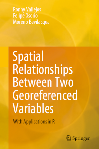

| Felipe Osorio is an applied statistician. He received the degree in statistical engineering from the Universidad de Valparaíso, Chile, in 2001, and the D.Sc. degree in statistics from the Universidade de São Paulo, Brazil, in 2006. His research interests include statistical modelling, likelihood-based inference, longitudinal data analysis under non-normal distributions and statistical diagnostics as well as the computational implementation of such techniques. Recently, he has also become interested in spatial statistics. He is the creator and the maintainer of several packages for the R statistical environment. |
 Orcid ID
Orcid ID Book
Vallejos, R., Osorio, F., Bevilacqua, M. (2020).
Spatial Relationships Between Two Georeferenced Variables
With Applications in R. Springer, Cham.
DOI: 10.1007/978-3-030-56681-4 
This book is about how to assess the correlation between two spatial processes. The book describes several different scenarios in which the correlation between two or more sequences is computed. This includes, for instance, useful material for people interested in spatial statistics, time series and image analysis.
